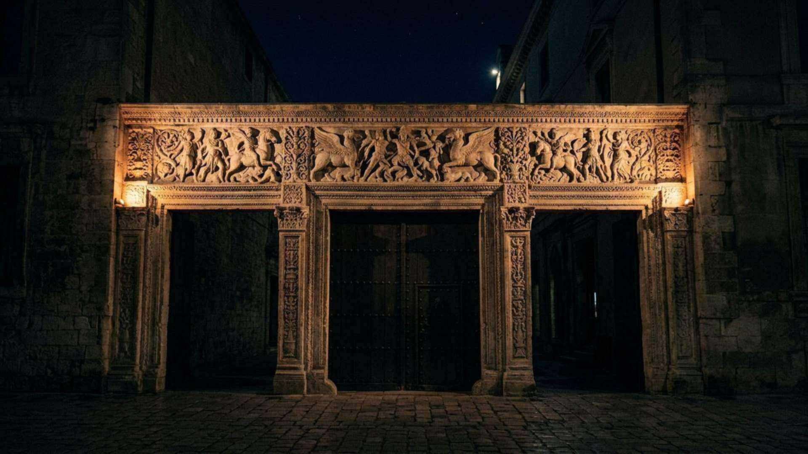
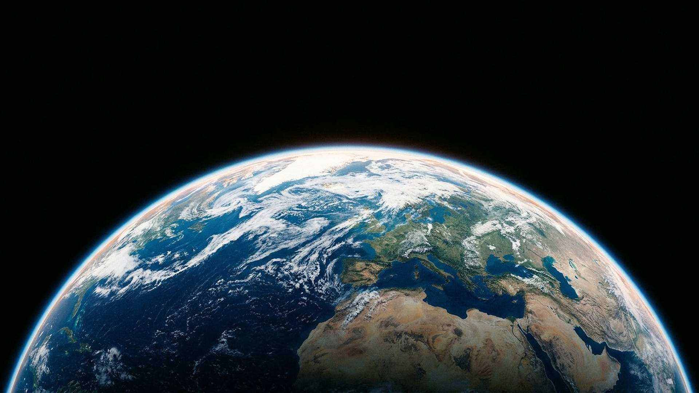

La visite en huit stations
Huit arrêts, huit preuves
Un parcours resserré pour comprendre l’essentiel en dix minutes. Défilez : chaque station s’installe, puis laisse la place.

Station 1 — Le cosmos
13,787 milliards d’années
Trois mesures, trois découvertes : l’expansion, le rayonnement fossile, la précision du satellite Planck. L’univers a une histoire, et cette histoire a un début.
Genèse 1:1

Station 2 — Les constantes
Quelques valeurs décident de tout
Le carbone dépend d’un équilibre entre deux forces ; les galaxies dépendent d’une constante cosmologique extraordinairement petite. Les marges sont chiffrées, les objections exposées.
Jérémie 33:25

Station 3 — La Terre
Une adresse ajustée
Bonne étoile, bonne distance, axe stabilisé par la Lune, champ magnétique, atmosphère filtrante : autant de conditions qui se combinent.
Isaïe 45:18

Station 4 — La cellule
350 tours par seconde
Des moteurs rotatifs de dix nanomètres, un code de trois milliards de lettres, une réparation permanente. C’est l’échelle où l’ingénierie humaine commence tout juste à copier.
Psaume 139:14

Station 5 — Le cerveau
86 milliards de neurones, 20 watts
Un millimètre cube de cortex humain vient d’être reconstruit : 57 000 cellules, 150 millions de synapses, 1,4 pétaoctet de données. Et ce n’est qu’un millionième du cerveau.
Psaume 139:14

Station 6 — Babylone
Un nom, deux siècles d’avance
Isaïe nomme Cyrus. La chronique babylonienne note une entrée sans combat. Le cylindre de Cyrus décrit le retour des peuples déportés dans leurs sanctuaires.
Isaïe 44:28

Station 7 — Tyr
Les pierres jetées à la mer
Ézéchiel décrit une ville dont les décombres finissent dans l’eau. En 332, Alexandre construit sa chaussée avec ceux de la ville continentale ; le tombolo existe encore.
Ézéchiel 26:12

Station 8 — Ce qui vient
Une espérance, sans date
Le musée se termine par une promesse : la mort disparaît, la terre est restaurée. Aucune date n’est avancée — le texte lui-même le dit.
Révélation 21:4
La visite s’arrête ici ; le musée, lui, continue.
Écouter la visite (1 min 49) Entrer dans les 31 salles Tester ses connaissances